按章审阅 · 10 张剧情图。点击图查看大图。
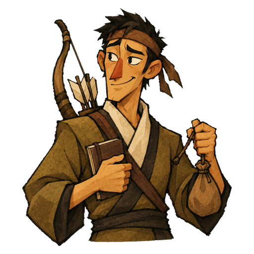
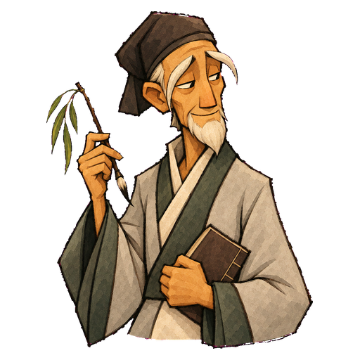
幽白冲出去会‘仙人’，却被自己的回声招回来。
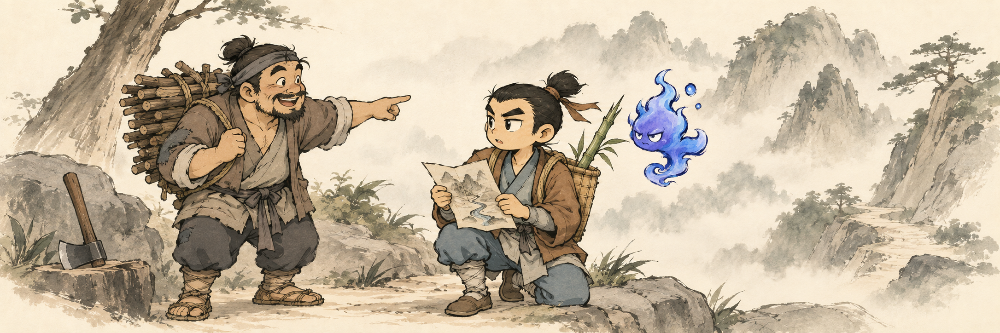
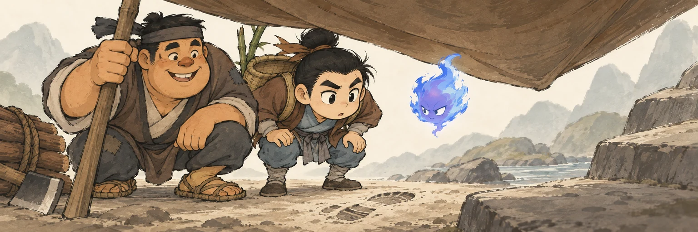
满场刺眼的光一收，头巾下面反而照出了真路。
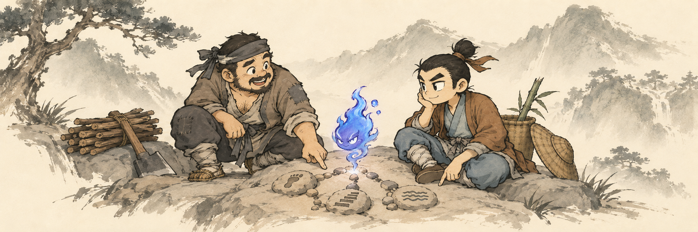
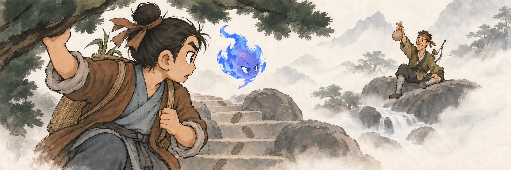
仙路的幻象让位于泥脚印，雾后求救声突然变成‘顺便救饼’。
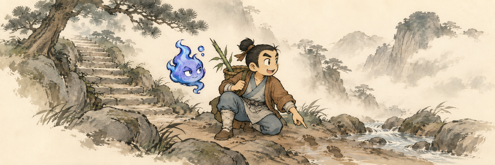
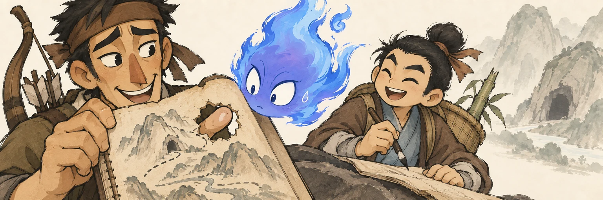
幽白把咬穿的纸洞当成山洞，猎人从背面探来一根指头拆穿。
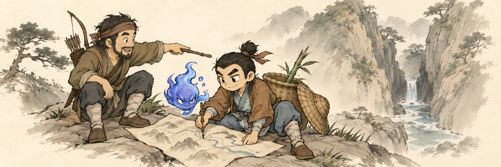
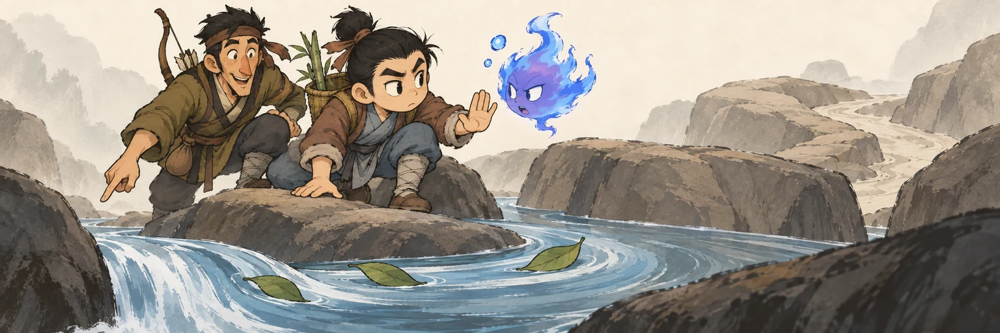
叶子绕一圈才现真出口，幽白的长篇解释卡在半句。
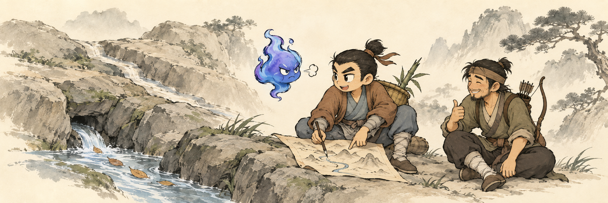
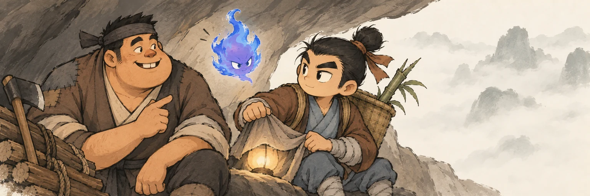
两个时代的地名对上，幽白刚想炫耀又被轻轻压回一盏实用的小灯。
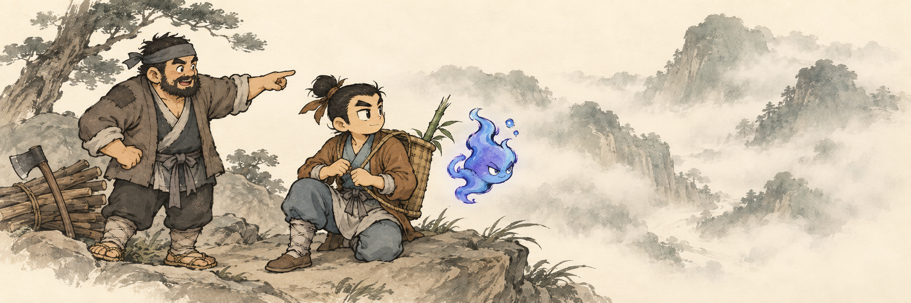
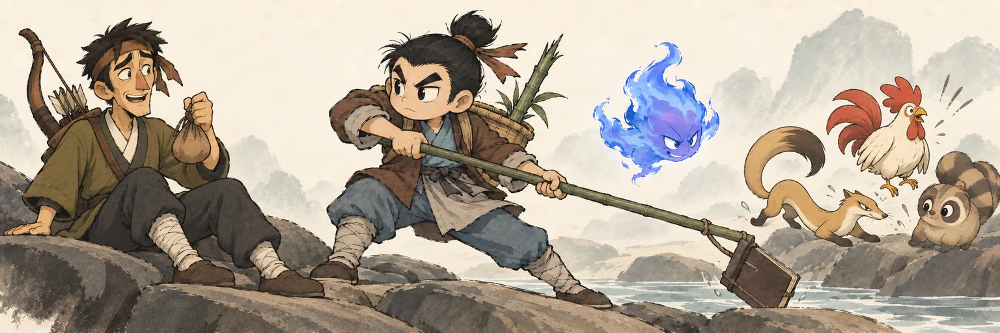
猎人举饼保命，主角横竿抢回手记；嘴硬的行家终于肯伸手求助。
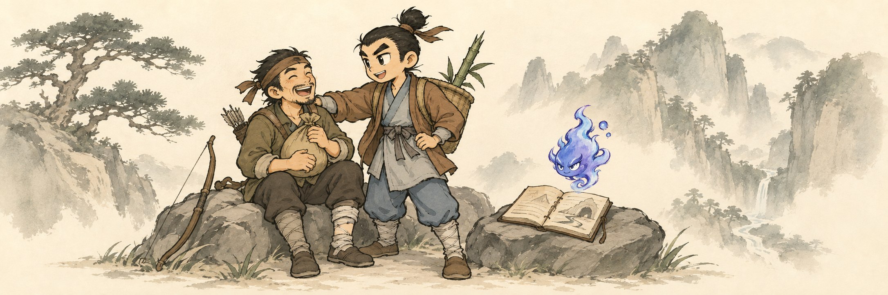
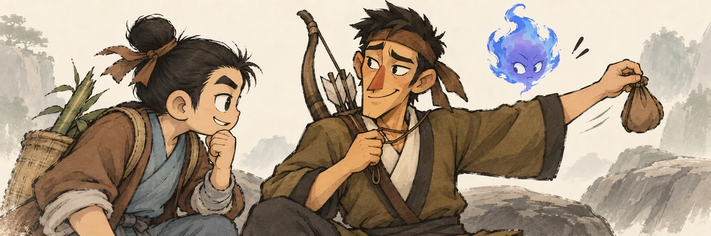
大侠等秘籍，猎人却先把肉干从脖子上摘了下来。
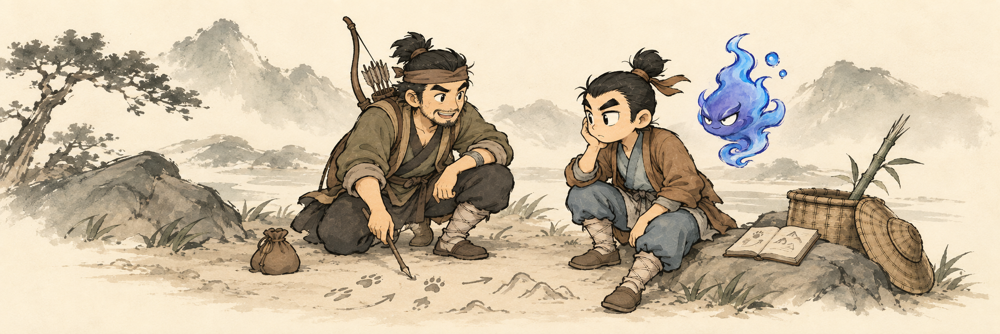
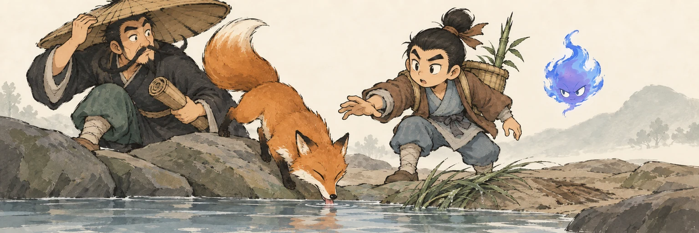
狐狸先喝到水，主人的高论被一口真水截了胡。
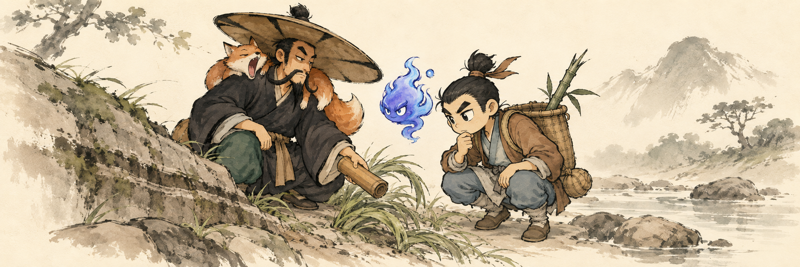
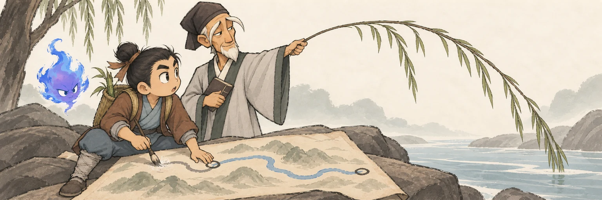
一根柳枝划过两处叫法，落回同一股真水，整章的争论终于合流。
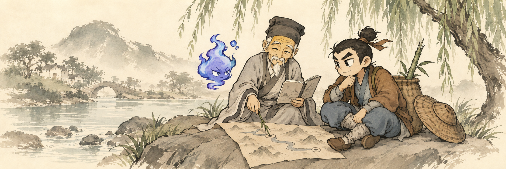